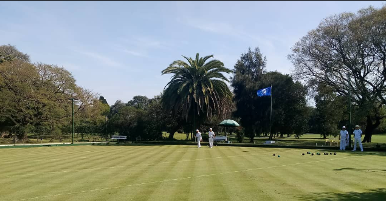
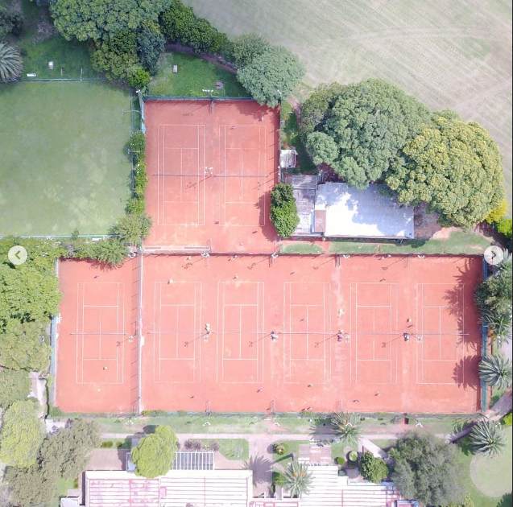

Disfrutá de una experiencia única en nuestra cancha de golf, tenis, natacion y mas.
Ser SocioDisfrutá de instalaciones de primer nivel para cada disciplina.

Una cancha de 18 hoyos diseñada para desafiar tanto a principiantes como a profesionales en un entorno natural único.
Ver más
Canchas de polvo de ladrillo iluminadas y una escuela de tenis con profesores especializados para todas las edades.
Ver másEspacio equipado y torneos recreativos frecuentes.
Canchas sintéticas de última generación con iluminación.
Entrenamientos y competencia para todas las categorías.
Instalaciones preparadas para práctica y partidos oficiales.
Clases formativas y disciplina de alto rendimiento.
Ubicados en un entorno natural privilegiado, a pocos minutos del centro.
Nuestras instalaciones están rodeadas de más de 80 hectáreas de vegetación autóctona. Un espacio concebido para desconectar de la rutina urbana, disfrutar del deporte al aire libre y compartir momentos únicos en familia.
Av. Gral. Paz 2702, C1650 Villa Maipú, Cdad. Autónoma de Buenos Aires
Acceso directo por autopista (Salida Km 42). Contamos con estacionamiento privado con seguridad las 24 hs.
Martes a Domingos de 07:00 a 22:00 hs.
Secretaría: 08:00 a 19:00 hs.